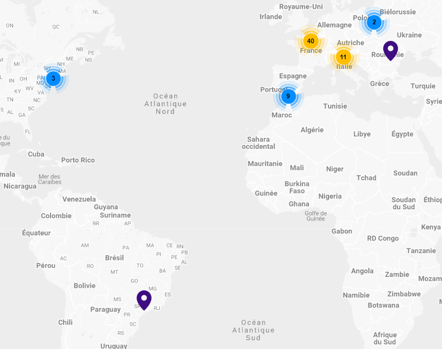

L'entreprise s'étale sur un champ géographique international. Implantée dans 16 pays, elle est la seule entreprise européenne à couvrir l'ensemble des métiers du numérique. Elle dispose de plus de 40 sites en France, dont 1 à Grenoble.
domaine
Econocom appartient au service tertiaire, elle propose donc ces services à d'autres entreprises.
Son domaine d'activité consiste à aider et accompagner ces entreprises dans leur transition vers le numérique.
Cette transition est devenue incontournable au 21ème siècle, avec notamment l'apparition des sites de commerces en lignes ou encore l'automatisation des tâches.
Econocom est également le premier infogéreur d'environnements utilisateur, l'infogérance ayant pour but de confier l'optimisation, l'exploitation et la gestion du système informatique d'une entreprise à un prestataire exterieur.
Econocom intervient sur un domaine très vaste:
- Les solutions de mobilités: Smartphones, tablettes
- Le matériel industriel: Robotique, chariots élévateurs
- Le matériel médical: Imagerie médicale, équipements médicaux
- L'audiovisuel: Ecrans, médias, caméras, micros, éclairage
- Les équipements énergetiques: LED, pompes à chaleur
géographie
cibles
- L'éducation : Le groupe propose des offres complètes, destinées aux enseignants et aux chefs d'établissement, de l'école primaire à l'enseignement supérieur. Elles contribuent à aider à la transformation numérique de ces établissements.
- L'industrie: Econocom accompagne les entreprises dans leur transformation numérique avec des solutions qui assurent une meilleure productivité.
- La santé: Le numérique est devenu essentiel aux hôpitaux, ces derniers étant souvent la cible de cyberattaques, Econocom assure la sécurité de ces services.